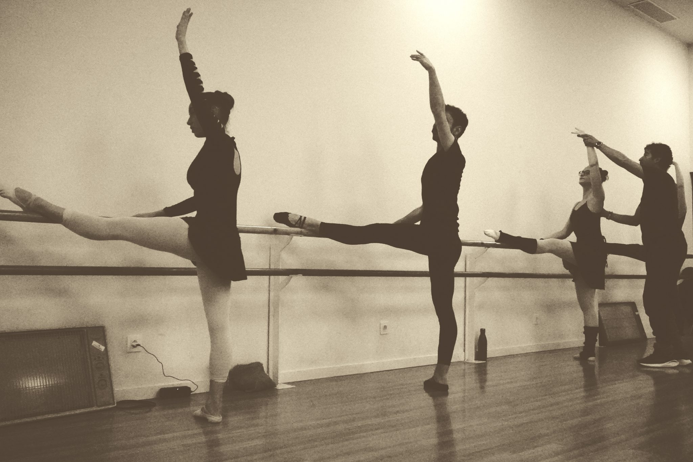
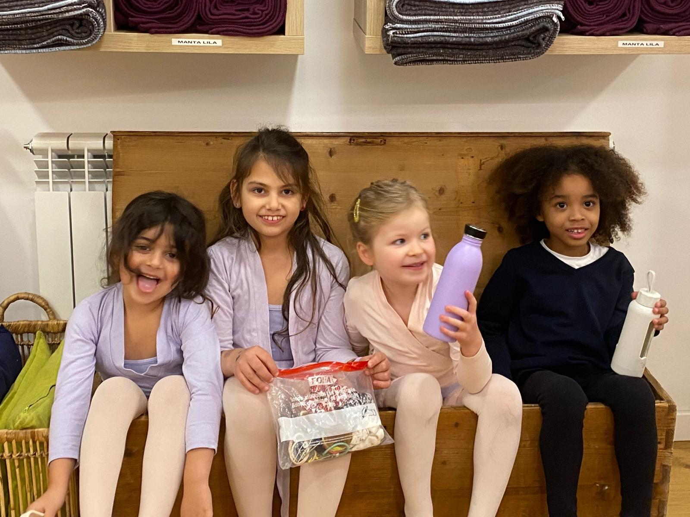
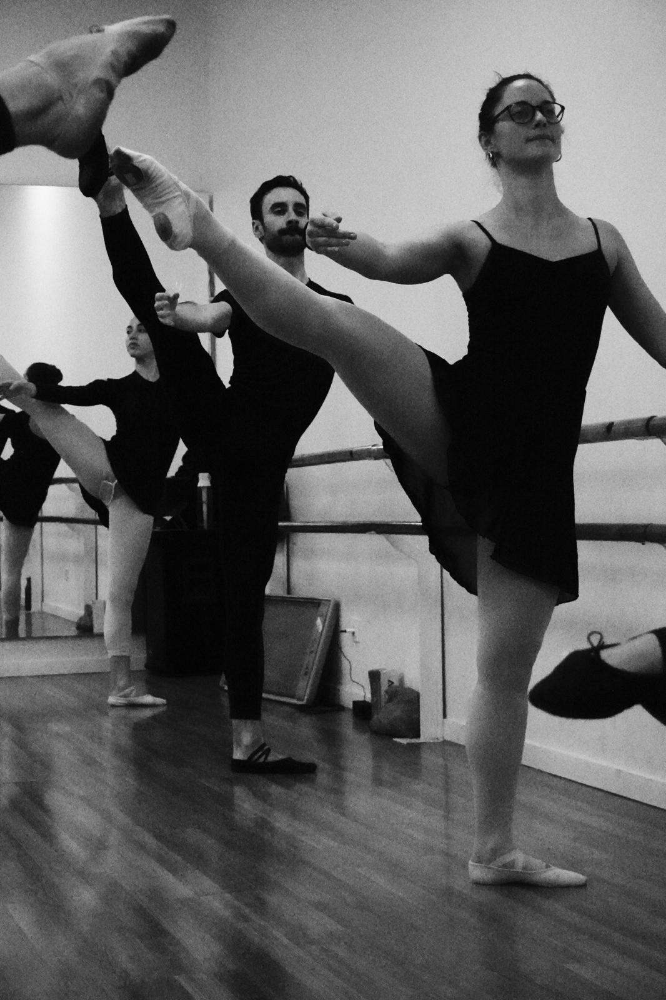

Ballet en Barcelona · Gràcia
Formación artística, técnica y humana para niñas, jóvenes y adultos.
Bienestar y salud a través de la danza.
Israel Rueda Ballet es una escuela de danza situada en el corazón de Gràcia, Barcelona.
Ofrecemos formación artística, técnica y humana para niñas, jóvenes y adultos en un ambiente cercano, profesional e inclusivo.
Creemos en una enseñanza elegante, rigurosa y respetuosa con cada alumno.

¿Por qué elegirnos?
Método técnico con atención personalizada.
Salas amplias, luminosas y diseñadas para bailar con comodidad.
Niñas, jóvenes y adultos encuentran su lugar en nuestra escuela.
Acompañamiento humano, profesional y personalizado.
Ballet en Barcelona – Gràcia
Desde iniciación hasta nivel avanzado, descubre una enseñanza cercana, rigurosa y pensada para disfrutar del ballet en Gràcia.



Testimonios
Recomiendo muchísimo tanto las clases para niños como las de adultos que quieran aprender ballet. Nuestra hija (de 6 años) se lo está pasando genial, y Luz, la profesora, es excelente. Verlas también me despertó las ganas de bailar, así que me apunté a la clase de principiantes para adultos. Allí encontré a Israel, un profesor muy atento y paciente.
Me apunté a ballet por primera vez siendo ya adulta y de primeras reconozco que me daba bastante respeto porque sé que es una disciplina difícil, pero Israel hace que las clases sean accesibles para todos y todas. Se nota la pasión que siente por la danza y siempre transmite una muy buena energía. Si alguien está planteándose iniciarse en el mundo del ballet, creo que esta escuela es una muy buena opción.
Me encantan las clases con Israel. Es un muy buen profesor, además de muy atento, dedicado y amable. Hay un muy buen ambiente en clase y siempre tengo ganas ir para aprender y mejorar más cada día.
Reserva una clase de prueba y descubre un ambiente cercano, profesional y pensado para disfrutar de tu danza.
Reservar clase de prueba